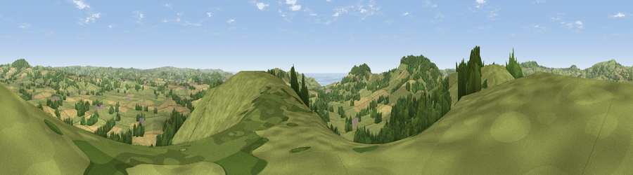

Viewpoint near Broad Oak
#6653 in England · top 16% of its area beats it · near Broad OakThe view, rendered

A 360° render of this exact spot computed from the terrain model, tree cover and land cover — summer colours, afternoon light, calibrated against photographs of famous viewpoints. Real trees, hedges and buildings will differ in detail.
The panorama
Grey silhouette: terrain skyline in each direction (720 bearings, Earth curvature and refraction included). Dashed green: skyline with trees (+15 m) and buildings (+8 m) as obstacles. Blue strip: how far the ground is visible on each bearing.
Where the view opens
Wedge length = distance to the farthest visible ground on that bearing (vegetation-aware). Rings at 10, 25 and 50 km.
What fills the view
67% grassland · 16% cropland · 16% woodland · 1% water
Angular shares of the visible panorama (visual magnitude), not map area. Landscape diversity 0.40 (0–1 Shannon).
Key numbers
More beautiful places nearby
The staircase of upgrades: each row has a higher view potential than everything closer. Driving times are estimates from straight-line distance, calibrated against real road routing — check an actual route before setting out.
| Place | Direction | Drive | Score |
|---|---|---|---|
| Denhay Hill or Jan's Hill | SE · 0 km | ~1 min | 74.2 |
| Viewpoint near Symondsbury | SSE · 3 km | ~6 min | 81.8 |
| Viewpoint near North Chideock | SSW · 3 km | ~8 min | 87.1 |
| Golden Cap | SSW · 4 km | ~9 min | 88.7 |
| The Knoll | SE · 14 km | ~25 min | 91.0 |
50.75746, -2.81761 · source: screening · position refined by local search. Computed location — check access rights before visiting.